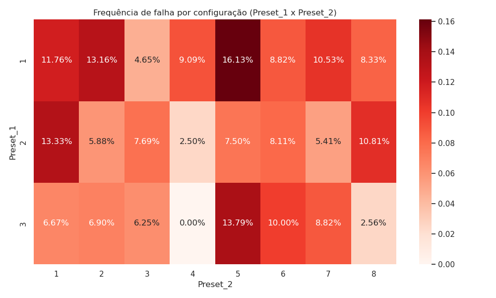
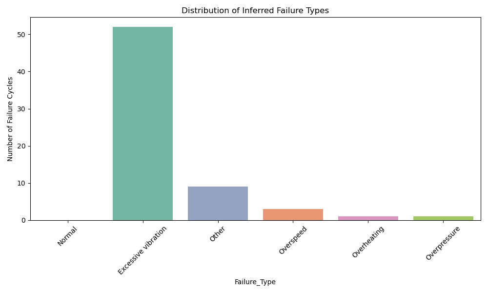
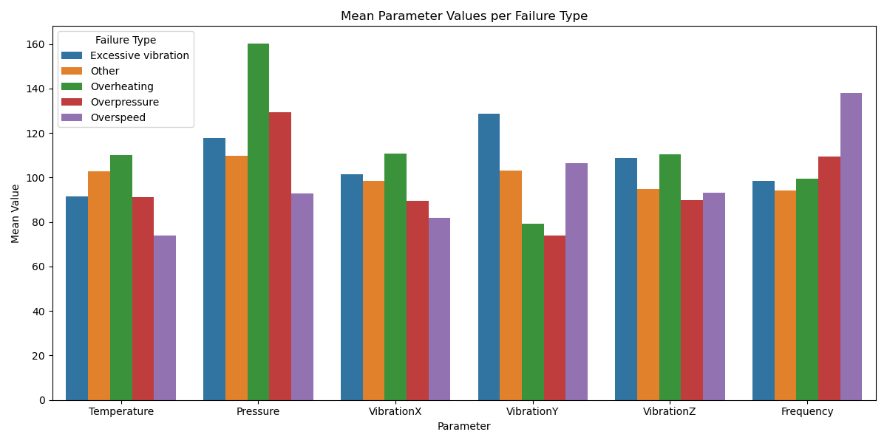
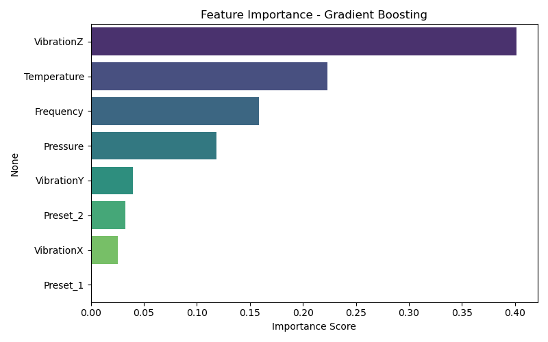
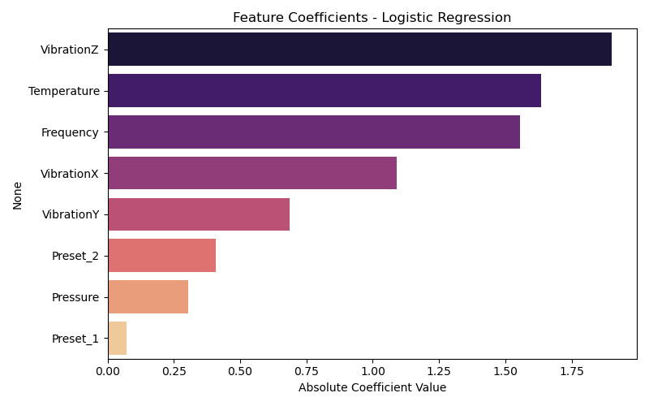
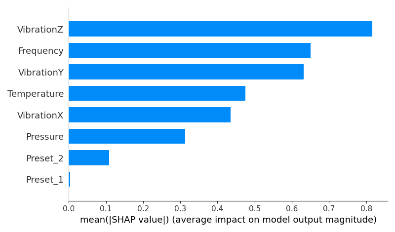
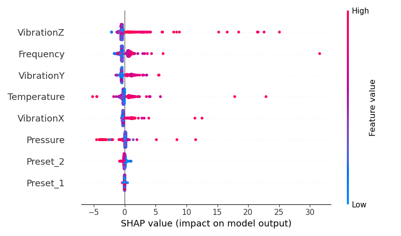

protachevicz@gmail.comgithub.com/Protachevicz This project illustrates how I applied statistical and machine learning techniques to analyze sensor data and anticipate system failures in operational cycles. I started by analyzing key sensor distributions such as Temperature, Pressure, VibrationX, VibrationY, VibrationZ, and Frequency.
Distributions were compared between normal operation cycles and those preceding failure events. This type of exploratory data analysis is essential to identify signals that are potentially predictive of anomalies or equipment degradation.
Highlights:
Variables like VibrationZ and Temperature showed significant shifts prior to failures.
Vibrations in all three axes tend to increase before adverse events.
Frequency and Pressure also showed changes, indicating multi-dimensional stress signatures.
Takeaway: This stage provides the foundation for effective feature selection and modeling by identifying features that correlate with future failure events.
Sensor cycles were grouped by configuration variables (Preset_1 and Preset_2), and their associated failure rates were computed. This approach helps identify configurations more prone to instabilities.

The heatmap highlights critical regions in the operational space. These findings support strategic intervention such as reconfiguring default parameters or adding redundancy in high-risk zones.
Using threshold-based rules, failures were categorized into:
Overheating (Temperature > 100°C)
Overpressure (Pressure > 120 units)
Excessive Vibration (Any axis > 120 units)
Overspeed (Frequency > 110 units)
Other


Insight: Different physical stressors contribute to failures, reinforcing the need for tailored diagnostics and multi-sensor fusion.
The goal was to anticipate failures using classification models trained on normal cycles. I evaluated:
Logistic Regression (with StandardScaler)
Gradient Boosting Classifier
Models were validated via cross-validation and hold-out test sets (15 positive, 15 negative).
Logistic Regression:
Accuracy (CV): 92%
Recall (Failures): 92%
AUC (Test): 0.947
Gradient Boosting:
Accuracy (CV): 94%
Recall (Failures): 39%
AUC (Test): 0.920
Conclusion: Logistic Regression demonstrated superior generalization and reliability in high-recall scenarios — critical in predictive maintenance.
Feature importance was derived using:
Gradient Boosting’s feature_importances_
Absolute coefficients from Logistic Regression
SHAP values for model interpretability




Takeaways:
VibrationZ, Temperature, and Frequency were consistently top predictors.
SHAP values provided local explanations, revealing how feature values contributed positively or negatively to individual predictions.
These insights enhance trust in the model and are critical for safety-focused applications.
This project highlights my ability to:
Apply statistical reasoning to real-world sensor data
Build robust classification models under class imbalance
Perform feature importance analysis and interpretability with SHAP
Communicate findings through clear visuals and insights
This workflow is applicable across multiple domains: industrial monitoring, IoT systems, anomaly detection, healthcare devices, and beyond.